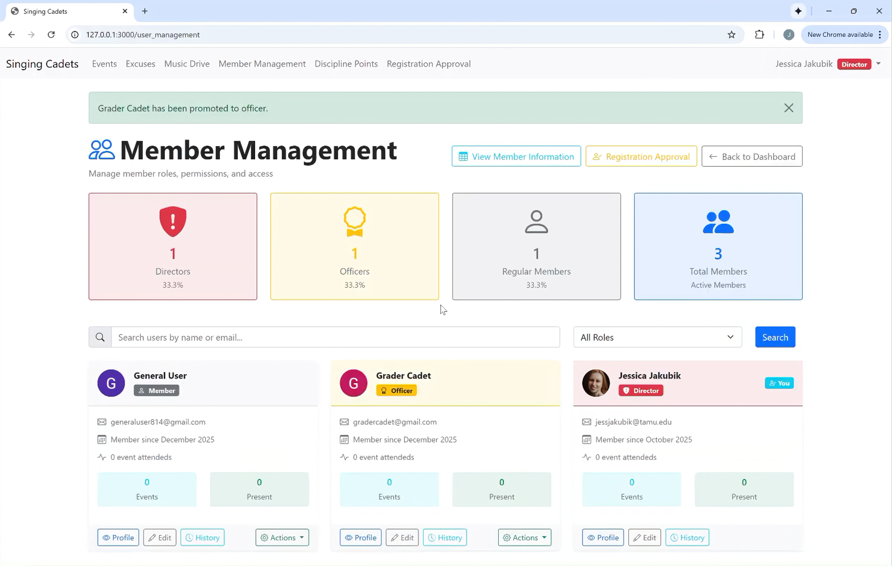
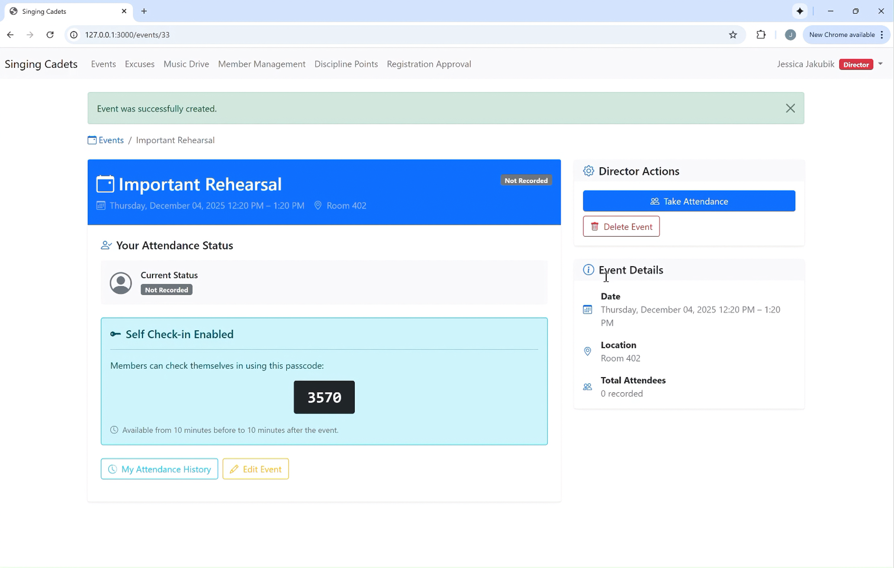
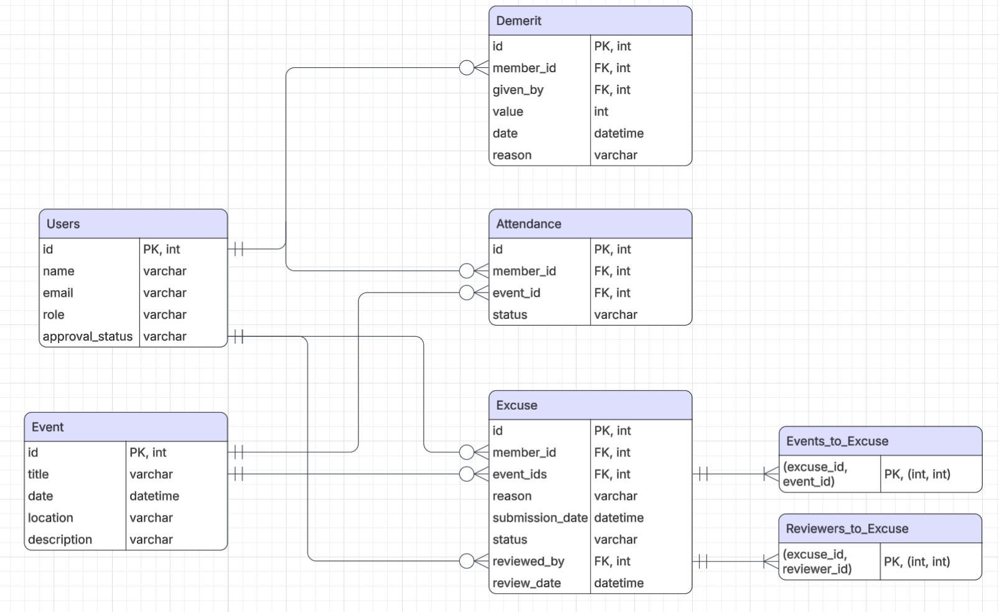
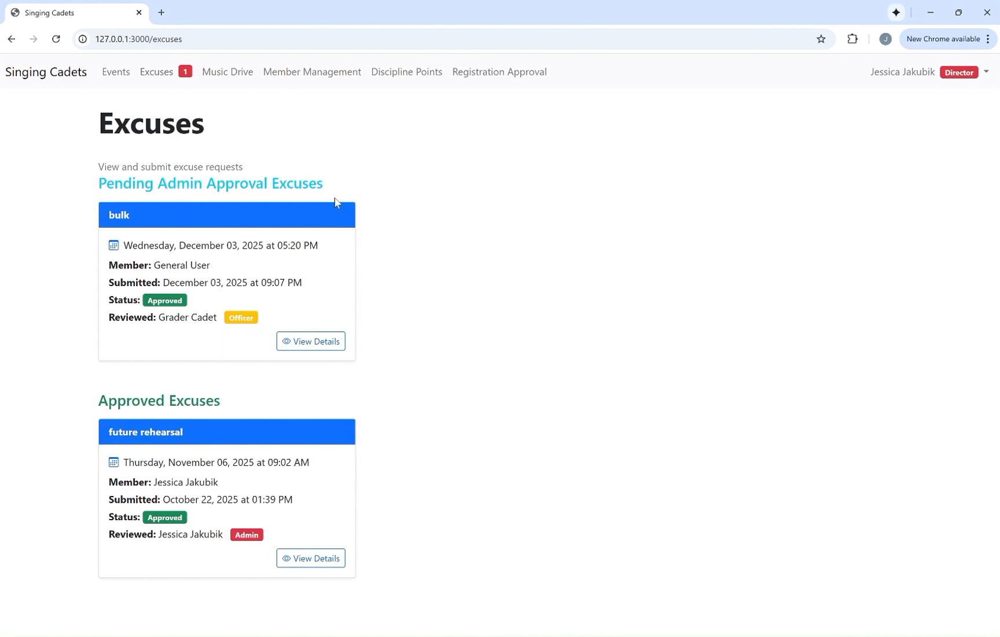

Member Management Web App
A web application built for Texas A&M's Singing Cadets to simplify organization management by bringing together event scheduling, attendance tracking, member management, and disciplinary records.

Overview
Managing a large student organization involves coordinating events, tracking attendance, and keeping up with member records. Our team developed a web application to bring these responsibilities together in one place, reducing manual work for officers and making important information easier for members to access.

Built by a five-person Agile team, the application uses Ruby on Rails and PostgreSQL to support four main areas: events, attendance, member management, and discipline points.
My primary contributions focused on database design, event management, and excuse handling:
I designed the majority of the application's database structure using an Entity-Relationship (ER) diagram, defining how members, events, attendance records, and other application data relate to one another.

I also developed features for creating and managing events, and built the complete excuse submission and approval workflow: connecting member submissions with officer / administrator multi-level reviews.

Our team's design was selected for handoff to future development teams, allowing the project to continue beyond the original semester!
Requirements / Scope
The application was designed around five main areas of organization management:
- Event Management: Allow officers to create, edit, and manage events. Support bulk creation of recurring events with shared details and different dates.
- Attendance Tracking: Allow members to check in using randomly generated, event-specific codes. Codes are only valid within a limited window around the event. Support present, absent, and excused statuses, with the ability for officers to manually adjust attendance if needed.
- Member Management: Provide officers with tools to manage member information / roles and give members access to their own organization records.
- Disciplinary Points: Allow officers to assign disciplinary points for issues such as grooming or uniform standards. Members can review assigned points, see the reasons behind them, and track their current standing, including whether they have entered the organization's "Red Zone."
- Excuse Management: Allow members to submit excuses for events they cannot attend. Officers can provisionally approve or deny submissions before an administrator makes the final decision. Administrators can agree with or override the officer's decision, and approved excuses automatically update attendance records.
Highlights
- Project Selection: Our team's database design and application were selected over another team's work to be handed off to future development teams, providing a foundation for continued development of the Singing Cadets management system.
- Database Design: Designed the majority of the application's relational database structure using an ER diagram, defining entities, relationships, and how data was organized across the application.
- Multi-Step Excuse Approval: Developed the complete excuse workflow, from member submission to officer review and final administrator approval. Administrators can agree with or override the officer's initial decision.
- Automated Attendance Updates: Connected excuse approvals with attendance records so that approved excuses automatically mark the corresponding event as excused.
- Event Search & Filtering: Implemented event search and filtering by details such as name and date, making it easier for members to find events when submitting excuses.
- Database Integration: Developed the backend functionality connecting excuse submissions, event records, and attendance statuses.
- Agile Collaboration: Collaborated with a five-person team to develop and integrate features through an iterative development process.